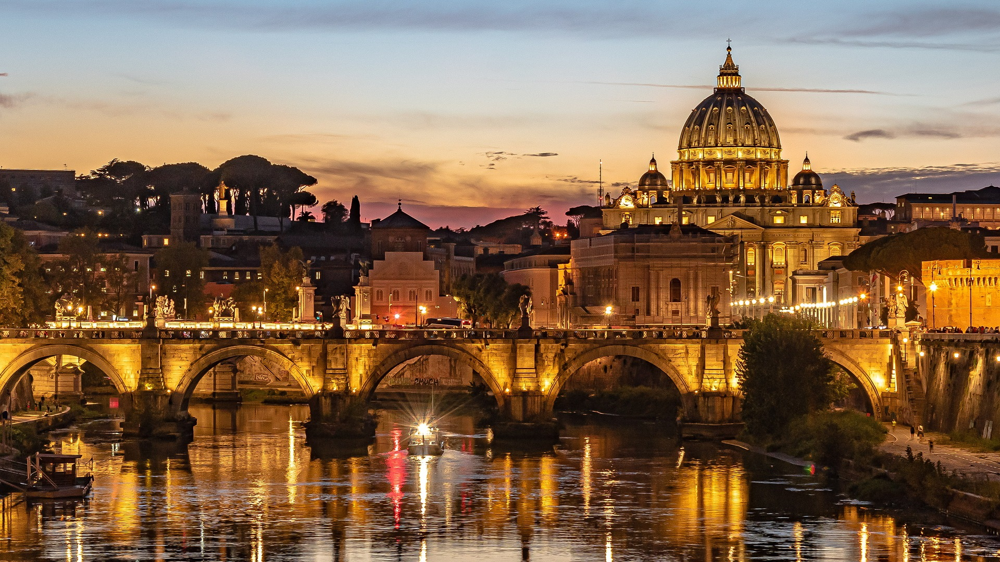

Коротка характеристика
Рим — столиця Італії, «Вічне місто», де античні руїни, ренесансні палаци та сучасне життя існують поруч.
Чому я обрав(ла) це місто
Рим вражає тим, що історія тут не в музеях, а на кожному кроці: можна випити кави біля стародавніх колон. До того ж італійська кухня та атмосфера роблять кожну прогулянку особливою.
Цікаві факти
- За легендою, Рим заснований у 753 році до нашої ери.
- Колізей збудовано у 80 році нашої ери, він міг вмістити близько 50 тисяч глядачів.
- Ватикан — найменша держава у світі — розташований усередині Риму.
Визначні місця
- Колізей
- Пантеон
- Фонтан Треві
- Ватикан і собор святого Петра
Моя оцінка
10 з 10